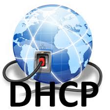

HTTP
HTTP é a sigla para Hypertext Transfer Protocol, ou Protocolo de Transferência de Hipertexto. Esse é o principal protocolo responsável pela transferência de dados na Internet, criando as bases necessárias para a conexão entre um cliente e um servidor.

HTTPS
HTTPS O https (Hypertext Transfer Protocol Secure ou Protocolo de Transferência de Hipertexto Seguro) é um protocolo de comunicação da Web que protege a integridade e a confidencialidade dos dados trocados por meio de comunicação criptografada.
DNS
O DNS (Domain Name System Sistema de nome de domínio) converte nomes de domínio legíveis por humanos (por exemplo, www.amazon.com) em endereços IP legíveis por máquina (por exemplo, 192.0.2.44).

FTP
Como funciona o FTP? O protocolo FTP é usado para transferências de arquivos entre um servidor, sistema de armazenamento ou outro dispositivo através de uma conexão de rede. Ele utiliza dois canais básicos para operar, um de comando e um de dados.
DHCP
DHCP é a sigla para Dynamic Host Configuration Protocol (protocolo de configuração de host dinâmico). O DHCP é um protocolo de gerenciamento de rede que foi transformado em padrão em outubro de 1993 e que realiza a atribuição automática de endereços de IP e outros parâmetros de comunicação para dispositivos conectados às redes.
SSH
SSH é a sigla para Secure Socket Shell, sendo um dos protocolos específicos de segurança de troca de arquivos entre cliente e servidor de internet, usando criptografia. O objetivo do SSH é permitir que desenvolvedores ou outros usuários realizem alterações em sites e servidores utilizando uma conexão simples e segura.